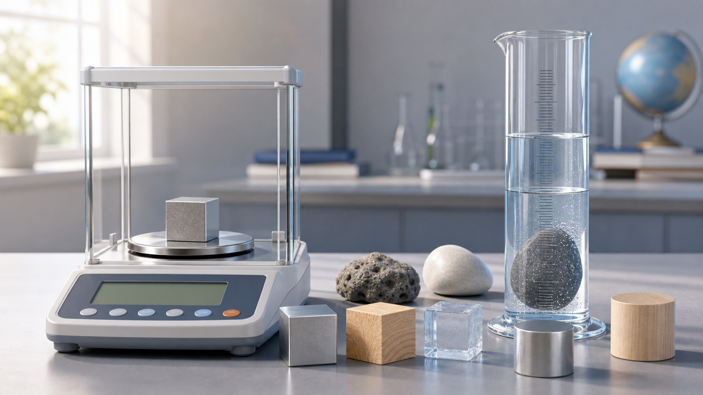

测质量
用调好的天平测出金属块质量 m，记录单位。

第六章 · 质量与密度
第六章把质量、体积和密度连接起来。你会用天平测质量，用量筒测体积，用 ρ = m / V 判断物质，也会意识到实验顺序会影响测量误差。
第 1 节
质量是物体本身的一种属性，位置、形状、状态改变时质量通常不变。实验室常用天平测质量。
本节抓手
第 2-3 节
密度反映物质的一种特性，公式是 ρ = m / V。相同体积时密度越大，质量越大；相同质量时密度越大，体积越小。
这个数值接近铁的密度，说明物体可能含有铁或钢。
实验方法
固体密度通常用天平测质量、量筒排水测体积；液体密度要注意容器残留造成的误差。
用调好的天平测出金属块质量 m，记录单位。
量筒中先读 V1，放入物体后读 V2，物体体积 V = V2 - V1。
代入 ρ = m / V，并和常见物质密度表比较。
| 质量 m/g | 水面 V1/cm³ | 水面 V2/cm³ | 体积 V/cm³ | 密度 ρ/(g/cm³) |
|---|---|---|---|---|
| 10.0 | 7.80 |
体积为 10.0 cm³，密度约为 7.80 g/cm³。
第 4 节
密度不只用来做计算。把温度变化、物体结构和使用场景放在一起，才能解释热气球升降、材料选择和物质鉴别。
对多数物质，温度升高时体积会增大。质量不变而体积增大，密度通常减小，气体的变化尤其明显。
球内空气受热膨胀，部分空气排出，平均密度小于外界空气，热气球更容易获得向上的净作用。
空心、混合材料和温度差都会影响判断，测得密度接近某种物质时，只能说明“可能是”。
选择一个变化，判断球内空气密度和热气球运动趋势。
加热后球内空气平均密度减小，热气球更容易上升。
实验题专项
期末实验题常把红豆、石块、烧杯放进同一个问题里。只会套公式还不够，要看质量、体积哪个被测大或测小。
指针偏左，说明左侧偏重，平衡螺母向右调；砝码必须用镊子夹取。
红豆质量 = 烧杯和红豆总质量 - 空烧杯质量，别把容器质量算进去。
红豆全部浸没后，体积 = 后读数 - 原来水的读数，单位 mL 可直接看作 cm³。
直接倒进量筒量体积，会把红豆间空隙也算进去，体积偏大，密度偏小。
先判断哪个量偏大或偏小，再判断密度结果偏大、偏小，还是基本不变。
红豆之间的空隙也被算进体积。
石块表面带着水，称得的质量偏大。
计算体积时使用的 V 偏大。
只要单位换算正确，物理量本身没有变。
量筒壁上残留一部分液体，称得的质量偏小，但体积仍按倒出前读数计算。
两次称量相减得到倒入量筒那部分液体的质量，能避开烧杯残留的影响。
提示：密度公式中，质量偏大会让结果偏大，体积偏大会让结果偏小。
第六章检查
完成下面 11 题，检查天平量筒、密度计算、实验设计和误差方向。